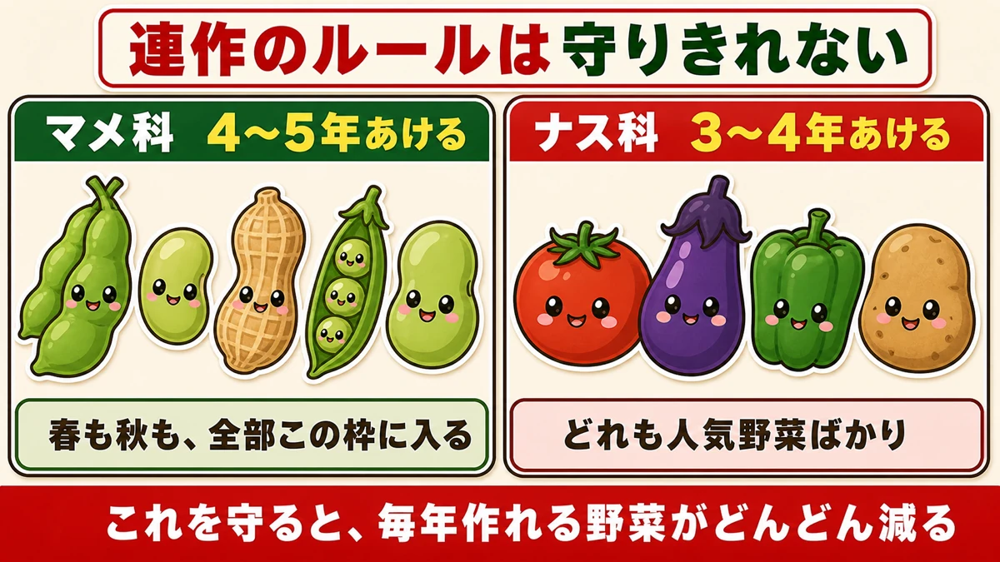
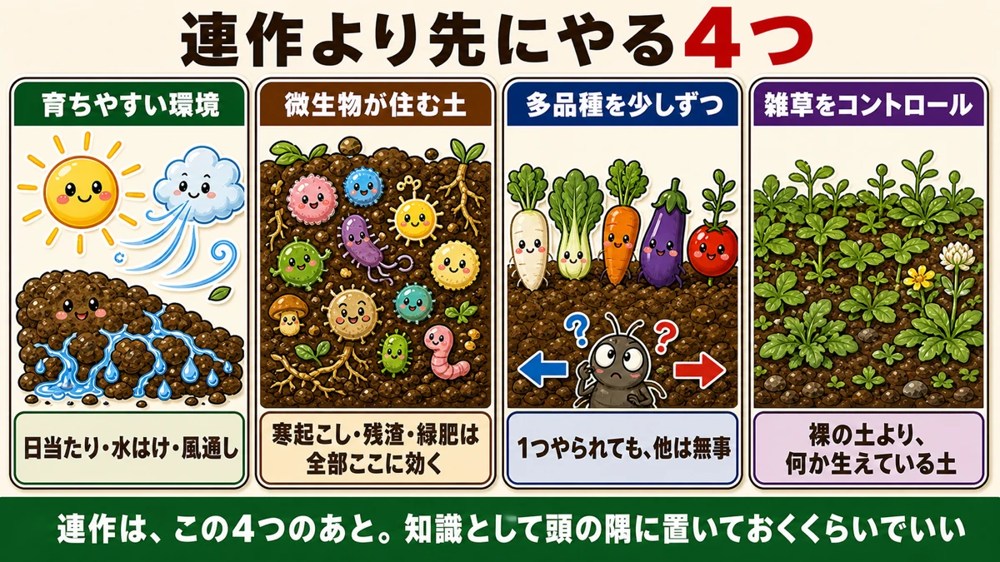
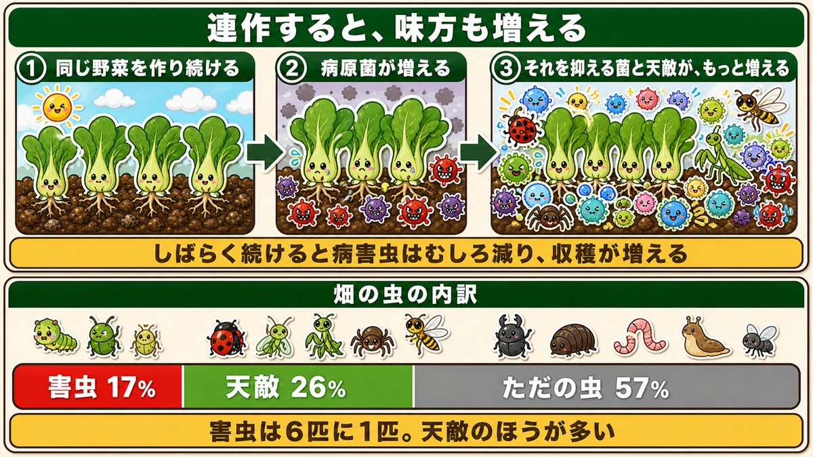
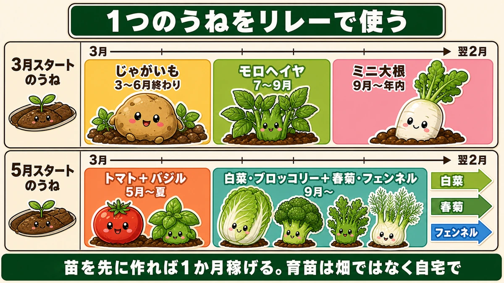
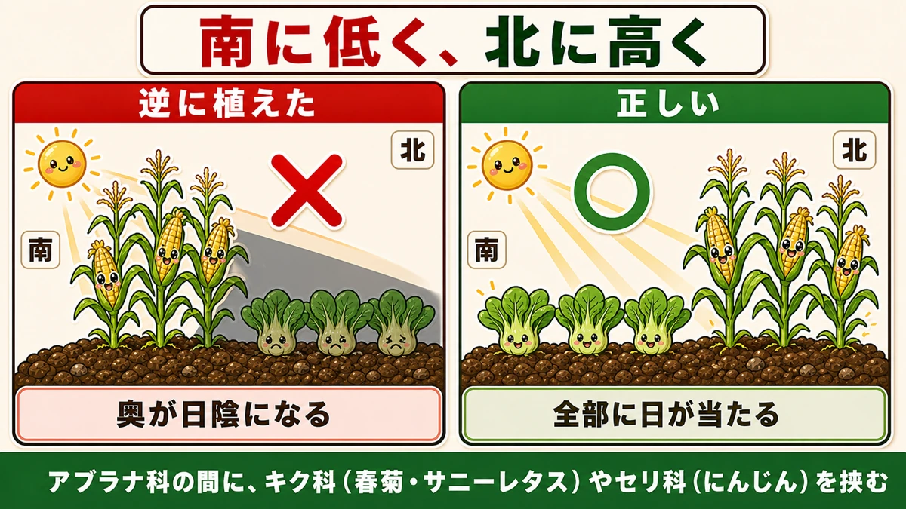
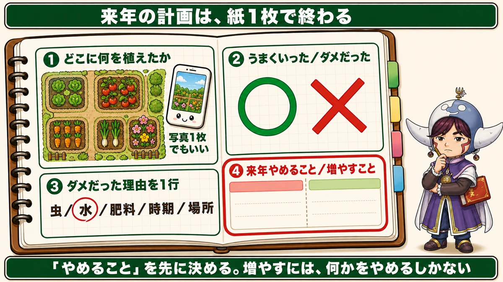

連作障害、そんなに気にしなくて大丈夫です🗺️ 来年の畑を紙1枚で決める
🗨️「連作障害が怖くて、いつも同じ配置になってしまう」
🗨️「ナス科は3年あけろと言われても、そんな場所ない」
🗨️「来年の計画って、どこから考えればいいの？」
どうも、8150（えいこう）です🌱 家庭菜園歴8年、理科の教員免許を持っていて、有機・無農薬で野菜を育てています。
今回は、来年の畑をどう決めるかという話です。
先に、この記事でいちばん言いたいことを言っておきますね。
連作障害は、家庭菜園ではそこまで気にしなくて大丈夫です。
こう書くと怒られそうなので、理由をちゃんと説明します。
でもその前に、ひとつ考えてみてください。マメ科は4〜5年あける。ナス科は3〜4年あける。これ、守れますか。
私は守れません。
📖 この記事の目次
なぜ「守れない」のか、数えてみます

ルールどおりにやろうとすると、こうなります。
マメ科に入るもの … 枝豆・いんげん・落花生・えんどう・そら豆
ナス科に入るもの … トマト・なす・ピーマン・じゃがいも
見てください。どれも人気野菜ばかりです。
じゃがいもを植えた場所は、3〜4年トマトもなすもピーマンも植えられない。春に枝豆を作った場所には、秋のそら豆もえんどうも植えられない。
家庭菜園の広さでこれをやると、毎年作れるものがどんどん減っていきます。
私は最初の2年、これで真剣に悩みました。ノートに畑の図を描いて、何年前にどこに何を植えたかを書き込んで、パズルみたいに配置を考えて。それで結局「今年もここは空けておこう」と、いちばん日当たりのいい場所を寝かせていました。
今思うと、あれはもったいなかったです。
そもそも、誰の話だったのか
ここが大事なところなんですが、連作障害が大きな問題として語られるようになったのは、化学肥料と農薬を使って効率を上げる、大規模な単一栽培の中でのことなんですね。
同じ作物を、広い畑いっぱいに、毎年作り続ける。そういう作り方での話です。
家庭菜園は、その正反対です。狭い場所に、いろんな野菜を少しずつ。
前提がまるで違うのに、ルールだけがそのまま持ち込まれている。だから「守れない」のは当たり前なんです。
私が話を聞いた有機栽培のベテランの方は、20年以上無農薬でやっていて、こう言っていました。連作障害に困ったことは、一度もない、と。
連作より先に、効くことが4つあります

「じゃあ何も考えなくていいのか」というと、そうではありません。順番の話です。
連作を気にする前に、これを先にやってください。効き方がまるで違います。
①野菜が育ちやすい環境をつくる
日当たり、水はけ、風通し。この3つです。
うまく育たない原因を10個並べたら、上位に来るのはたいていこの3つで、連作はずっと下のほうにあります。
日陰で水はけの悪い場所に植えて、うまくいかないのを連作のせいにしていた。私はこれをやっていました。
②土の中の微生物が住みやすい土をつくる
寒起こし、残渣を戻す、緑肥をまく。冬にやる仕込みは、全部ここに効きます。
微生物が豊かな土では、特定の菌だけが増えるということが起きにくい。これが、いちばん本質的な連作対策だと思っています。
③多品種を少しずつ楽しむ
これは我慢ではなく、そのほうが強いという話です。
同じ野菜が広い面積に並んでいると、その野菜を狙う虫や菌にとっては天国です。でも1うねに5種類あれば、どれか1つがやられても他は無事。
家庭菜園の「いろいろ作りたい」という気持ちは、実は理にかなっているんですね。
④雑草を、敵ではなく緑肥として扱う
全部きれいに抜くのではなく、コントロールする。
麦やクローバーを緑肥としてまくのと同じで、地面が覆われていること自体に意味があります。裸の土より、何か生えている土のほうが微生物が保たれます。
この4つをやっていれば、連作は「知識として頭の隅に置いておく」くらいで十分です。私はそう考えるようになってから、畑がずっと楽しくなりました。
学ぶ：連作すると、実は味方も増えます🔬

理科の時間です。ここが今回いちばん面白いところだと思います。
同じ野菜を作り続けると、その野菜を狙う病原菌が増える。ここまでは、よく言われるとおりです。
でも、話には続きがあります。
病原菌が増えると、その病原菌を抑える菌も増えるんです。
害虫が増えると、その害虫を食べる天敵が増える。しかも研究によると、増える量は、抑えるほう・食べるほうがはるかに多い。
結果として、しばらく続けていると病害虫はむしろ減って、収穫が増えていく。これを発病衰退現象（はつびょうすいたいげんしょう）といいます。
畑の虫を数えてみた話
日本土壌協会が、いろいろな作物を共存させて育てている畑の虫を調べたデータがあります。
- 害虫 … 17%
- 天敵（害虫を食べる虫） … 26%
- どちらでもない、ただの虫 … 57%
害虫は、全体の6分の1しかいません。そして害虫より天敵のほうが多い。
私はこの数字を見たとき、畑の見え方が変わりました。虫を見つけるたびに身構えていたけれど、6匹に1匹しか敵じゃないんだな、と。
つまり、こういうことです
人が変な手出しをして環境を壊さなければ、自然は自然に健全化していく。
農薬で虫を全部いなくすると、害虫だけでなく天敵も消えます。すると次に害虫が入ってきたとき、食べてくれるものが誰もいない。だから増え放題になる。
無農薬でやるというのは、我慢することではなくて、この味方たちを畑に住まわせておくことなんですね。
お子さんと一緒なら、畑で見つけた虫を「食べる側か、食べられる側か」で分けてみてください。テントウムシ、クモ、カマキリ、ヒラタアブ。思っているより味方が多いことに気づきます😊
リレー栽培 ー 1うねで年3作する

ここからは、具体的な組み立て方です。
計画を「配置」だと思うと難しくなりますが、「順番」だと思うとぐっと簡単になります。
例1：3月スタートのうね
- 3月 じゃがいも … 6月終わりに収穫
- 7月 モロヘイヤ … 8月末〜9月まで
- 9月 ミニ大根 … 年内に収穫
1年で3回穫れます。
ここにコツがひとつあります。★大根は移植ができません。だから苗を先に作っておくという手が使えない。
そこで、モロヘイヤのほうを少し早めに切り上げます。前の野菜を早く終わらせることで、大根の時間を作るわけですね。
例2：5月スタートのうね
- 5月 トマト＋バジル … 夏まで
- 9月 白菜・ブロッコリー＋春菊・フェンネル
こちらは、コンパニオンプランツ（一緒に植えると育ちがよくなる組み合わせ）を挟んだ形です。
面白いのはここからで、白菜を収穫したあとに春菊が穫れて、そのあとフェンネルが大きくなる。1うねで3段階、時間差で穫れます。
苗を先に作れば、1か月稼げます
リレーをつなぐ最大のコツが、これです。
例で説明しますね。
- 大根の収穫が4月下旬
- 土づくりをして、畑が使えるのが5月中旬
ここでタネをまくと、5月中旬がスタートになります。でも、4月中旬にセルトレイでタネをまいておけば、5月中旬に「苗」を植えられる。まるまる1か月得します。
★育苗は、畑ではなく自宅でやってください。
畑だと毎日は見に行けません。自宅なら、水が切れた、弱ってきた、というサインにすぐ気づけます。この差は大きいです。
配置は「背の高さ」で決める

これ、意外と見落とされているのですが、効果はすぐ出ます。
★背の高い野菜を南側に植えると、その北側が日陰になります。
だから、こうしてください。
- 小さい野菜を、南（手前）に
- 大きい野菜を、北（奥）に
トマトやとうもろこしを手前に植えてしまうと、奥の葉物が日照不足になります。同じ面積、同じ手間なのに、穫れる量が減る。もったいないですよね。
畑に立ったら、まず太陽がどちらから来るかを確かめる。それだけで配置の半分は決まります。
1うねに、何品目も入れる
支柱を土に押しつけて、15cm間隔で線を引きます。120cmのうねなら、7本の筋が引けます。
この筋にそれぞれ違う野菜をまいていく。1本の筋を半分ずつ2種類にしてもいいです。
ここでひとつだけ注意を。★アブラナ科ばかりを並べないでください。
小松菜・水菜・かぶ・チンゲンサイ。全部アブラナ科です。並べると虫が集中します。
間に、キク科（春菊・サニーレタス）やセリ科（にんじん・パクチー）を挟んでください。これらは虫が寄りにくいので、間仕切りの役目をしてくれます。
今年を振り返って、来年を決める

最後は、いちばん大事な作業です。とはいえ、紙1枚で終わります。
書くのは4つだけ。
①どこに何を植えたか
うねの地図を描きます。うまく描けなくて大丈夫です。
いちばんラクなのは、★収穫が終わる前に、畑をスマホで撮っておくこと。写真が1枚あれば、あとから思い出せます。
②うまくいったもの、ダメだったもの
○と×をつけるだけです。
③ダメだった理由を1行
ここが肝心です。原因を、5つのどれかに振り分けてください。
- 虫にやられた
- 水（多すぎ／少なすぎ）
- 肥料（多すぎ／少なすぎ）
- 時期がずれた
- 場所が合わなかった
理由まで書いておくと、来年の判断が変わります。「白菜が巻かなかった」だけだと来年も同じことをしますが、「肥料が多すぎた」と書いてあれば、来年は控えられます。
④来年やめること、増やすこと
★「やめること」を先に決めてください。
これがコツです。家庭菜園はスペースが限られているので、何かを増やすには何かをやめるしかありません。
「やめる」は後ろ向きに聞こえますが、そうではないんですよね。手が回らないものを抱えていると、全部が中途半端になります。3つに絞れば、3つとも上手にできる。
私は去年、ずっと作っていたけれど家族が誰も食べない野菜を、やめました。空いた場所に好きなものを植えたら、畑に行くのが楽しくなりました。そういう決め方でいいと思っています。
まとめ
ここまで読んでくださって、ありがとうございます！
来年の計画は、難しく考えなくて大丈夫です。ポイントを整理しておきますね。
- ★連作障害は家庭菜園ではそこまで気にしなくていい。守れないルールに縛られて、作れる野菜を減らさない
- 先にやるべきは4つ。日当たり・水はけ・風通し／微生物の住む土/多品種を少しずつ／雑草をコントロール
- ★連作すると病原菌は増えるが、それを抑える菌と天敵はもっと増える（発病衰退現象）。畑の虫は害虫17%・天敵26%
- 計画は「配置」でなく「順番」。1うねで年3作。★苗を先に作れば1か月稼げる（育苗は自宅で）
- ★背の高い野菜は北（奥）、小さい野菜は南（手前）。アブラナ科の間にキク科・セリ科を挟む
- 振り返りは紙1枚。どこに何を／○×／理由を1行／★やめることを先に決める
全部やろうとしなくて大丈夫です。まずは今日、畑をスマホで1枚撮っておいてください。それが来年の計画の材料になります。それだけで十分、いいスタートです🗺️
次回は、冬に甘くなる野菜の代表「ネギ」。白いところは、土をかけて作るという話をします🧅
プラグトレー 128穴（育苗用）
記事で「苗を先に作れば1か月稼げる」と書いたのがこれです。128穴もあると多いので、4分の1に切って32穴にすると家庭菜園にちょうどいいサイズになります。1枚210円なので、切って使い捨ててもいいくらいです。
![[商品価格に関しましては、リンクが作成された時点と現時点で情報が変更されている場合がございます。]](https://hbb.afl.rakuten.co.jp/hgb/56d221a0.da732c49.56d221a1.b57a6709/?me_id=1230952&item_id=10006155&pc=https%3A%2F%2Fthumbnail.image.rakuten.co.jp%2F%400_mall%2Fnou-nou%2Fcabinet%2Fnousi2%2F0108007400004.jpg%3F_ex%3D240x240&s=240x240&t=picttext "[商品価格に関しましては、リンクが作成された時点と現時点で情報が変更されている場合がございます。]")

えん麦のタネ（緑肥用）
空いたうねにまいておくと、冬の間も土の微生物が生きていられます。春に花が咲いたら刈ってすき込むだけ。連作より先にやるべき4つのうち「微生物が住む土をつくる」に、いちばん手軽に効きます。
![[商品価格に関しましては、リンクが作成された時点と現時点で情報が変更されている場合がございます。]](https://hbb.afl.rakuten.co.jp/hgb/56d21de3.ae31fd42.56d21de4.bc885a0a/?me_id=1381384&item_id=10000017&pc=https%3A%2F%2Fthumbnail.image.rakuten.co.jp%2F%400_mall%2Fyohonsha%2Fcabinet%2F10419213%2Fcompass1768461115.jpg%3F_ex%3D240x240&s=240x240&t=picttext "[商品価格に関しましては、リンクが作成された時点と現時点で情報が変更されている場合がございます。]")
備中鍬（三本爪）
リレー栽培で前の野菜を片づけて次を植えるとき、これがあると作業がまるで違います。1050mmの柄付きで、腰を伸ばしたまま使える長さ。長く使う道具なので、いいものを1本持っておくと結局は安くつきます。
![[商品価格に関しましては、リンクが作成された時点と現時点で情報が変更されている場合がございます。]](https://hbb.afl.rakuten.co.jp/hgb/56d752c3.3ce6fd3b.56d752c4.f8896826/?me_id=1209220&item_id=10002030&pc=https%3A%2F%2Fthumbnail.image.rakuten.co.jp%2F%400_mall%2Fhonmamon-r%2Fcabinet%2Fimg3%2Fw4580149745643.jpg%3F_ex%3D240x240&s=240x240&t=picttext "[商品価格に関しましては、リンクが作成された時点と現時点で情報が変更されている場合がございます。]")
あわせて読みたい